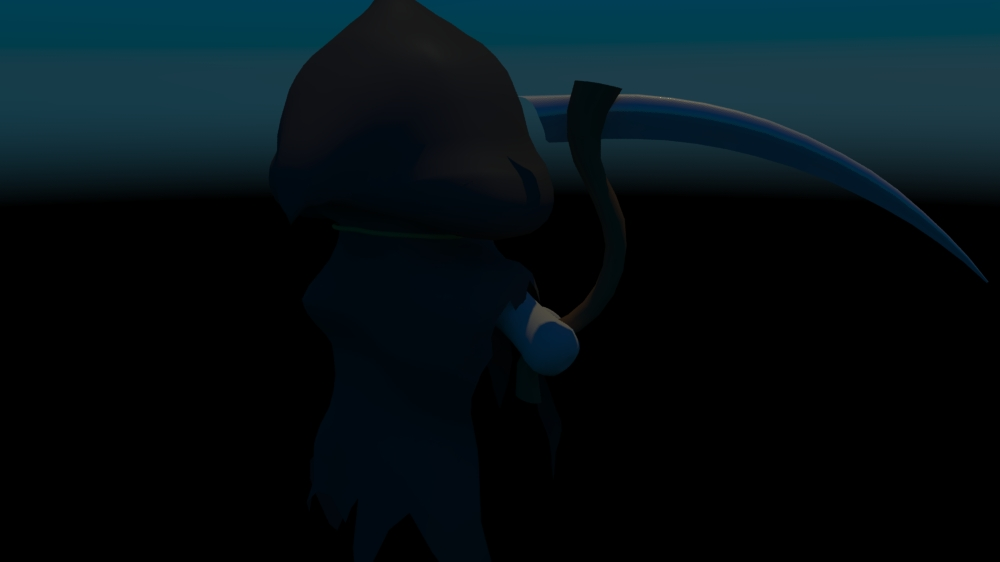
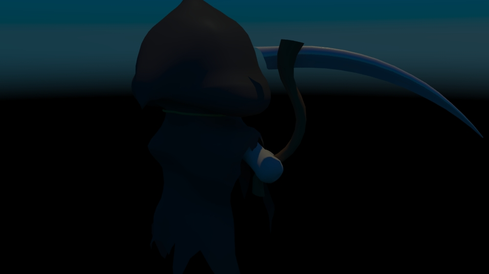

Grim
Finished in June 2014
Reason to create project:
This project was created in free time and just for fun. I got inspired by name of one of my friends (Her surname is Grim.)
I was trying to create as cartoonish as possible, but still make it look somehow haunting.
About project:
Project was created in Maya 2014 (Student licence), rendered by Mental Ray.
Scene contains Grim Reaper. His body consist of skull with massive smile, right hand holding small scythe and long rugged hood.
To make him more haunting, he has red glowing eyes inside skull (because they are deep inside, it seems he is watching viewer even from different angles).
Scene is expected to be used in Maya. Exported .fbx file probably doesn't have all the functions or correct look. (.fbx scene is just for preview or to access models even without Maya)
Renders:
 
Concept Arts:

Concept Arts:
 Renders: (from unfinished project)
Renders: (from unfinished project)
/Grim-02.jpg)
/Grim-03.jpg)
/Grim-04.jpg)